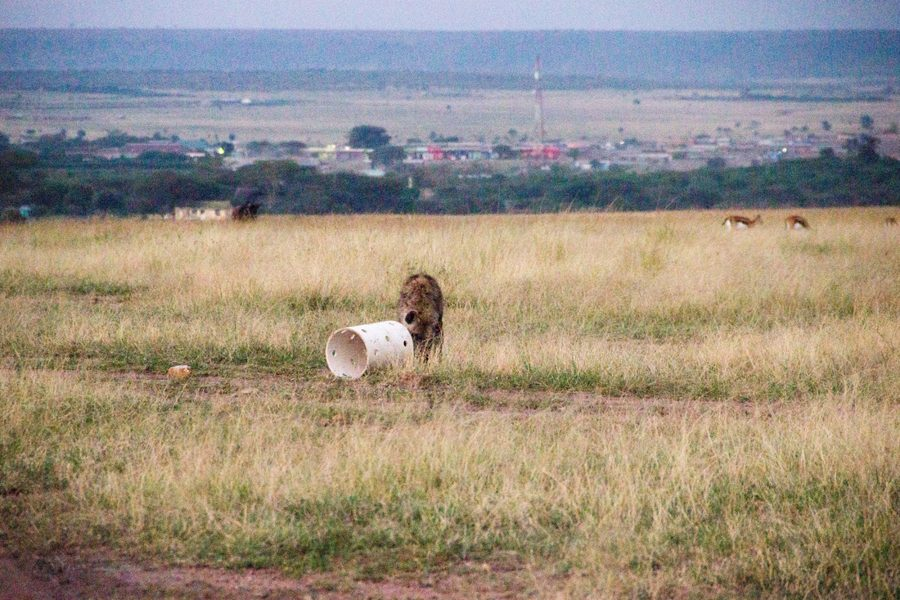
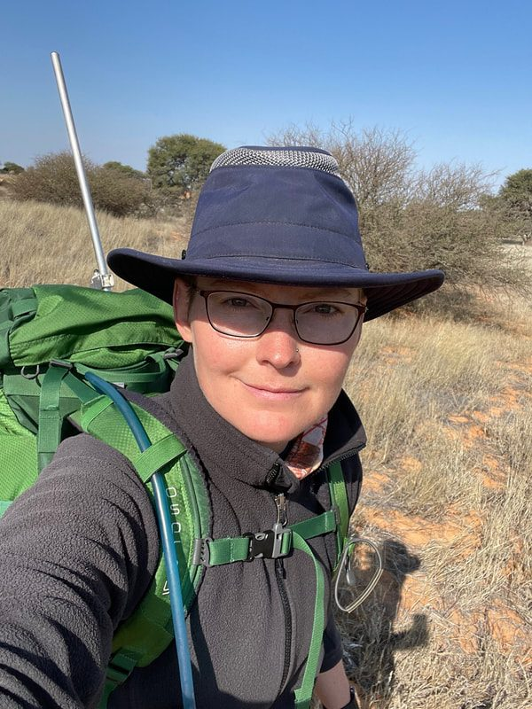
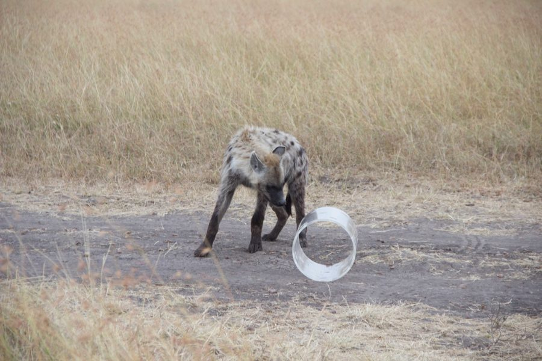
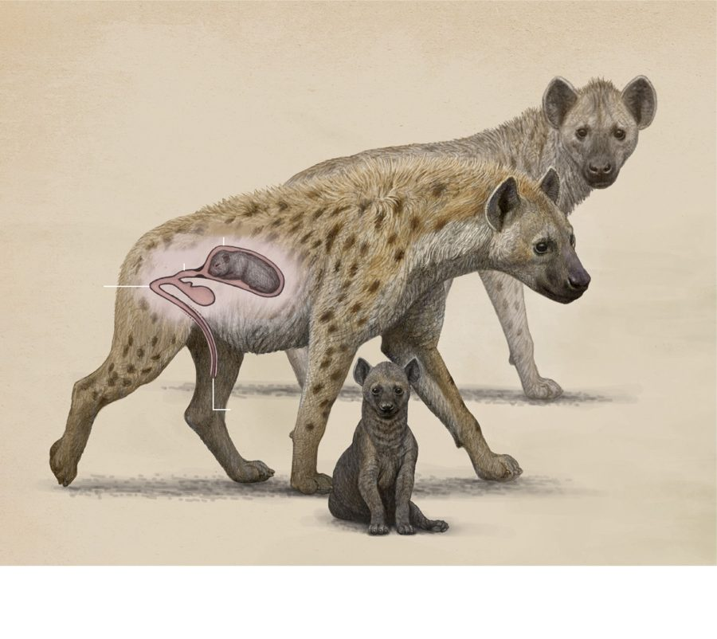

Urban Cognition Lab
Dr. Lily Johnson-Ulrich · Department of Psychology, Hunter College (CUNY), New York City
Photo courtesy of Guardian News & Media Ltd
Welcome!
Research in my group focuses on cognitive ecology. In particular, my students and I use urbanization as a framework or an (un)natural experiment in which to test hypotheses about the development, evolution, and adaptative function of animals' cognitive skills.

ResearchHyenas, coyotes, and how animals think their way through cities.
PeopleMeet Dr. Johnson-Ulrich and the students in the lab.
PublicationsPapers, chapters, and a downloadable CV.
NewsLab updates and media coverage of our research. OutreachSharing animal cognition and rethinking the hyena.
OutreachSharing animal cognition and rethinking the hyena.
 Join the LabResearch opportunities for Hunter students.
Join the LabResearch opportunities for Hunter students.